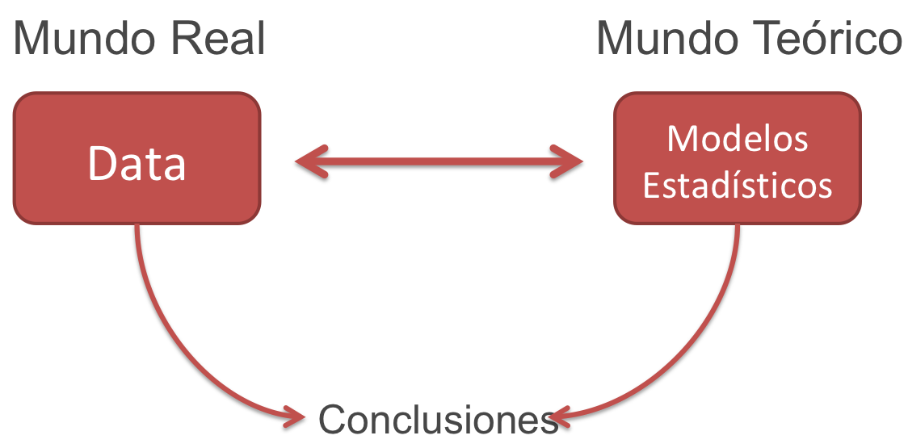

Análisis Inferencial
El análisis infencial se utiliza para derivar, por medio de modelos estadísticos, conclusiones respecto a un conjunto de datos
La idea es probar si los datos con los que contamos proveen suficientes evidencias para comprobar ciertas afirmaciones sobre un fenómeno a estudiar
La fortaleza de la conclusión depende de como los datos fueron colectados
